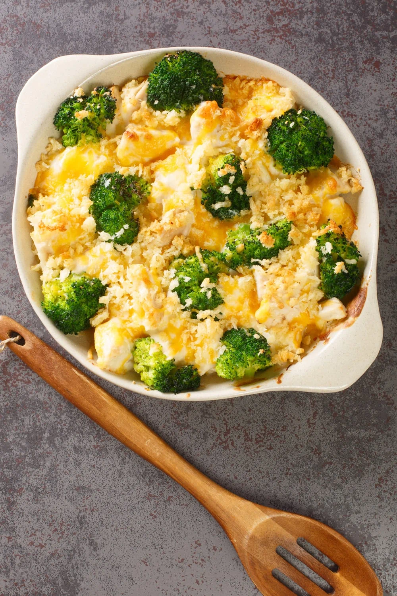

Chicken Divan

Description
This Chicken Divan recipe makes a glorious casserole filled with juicy bite-sized chicken, crunchy broccoli
florets, a ridiculously creamy sauce, and a crumbly and buttery topping, to boot.
Ingredients
- 1 pound fresh broccoli, chopped
- 1 1/2 cups cooked chicken meat, sliced into bite-sized pieces
- 1 (10.75-ounce) can condensed cream of broccoli soup
- 1/3 cup milk
- 1/2 cup shredded cheddar cheese
- 1 tablespoon butter, melted
- 2 tablespoons dried bread crumbs
Steps
- Preheat the oven to 450 degrees Fahrenheit.
- Place the broccoli in a saucepan and fill it with water. Bring the water to a boil. Cook the broccoli for 5
minutes, or until tender. Drain.
- Transfer the cooked broccoli to a 9-inch pie plate. Top with sliced chicken.
- In a bowl, whisk together the condensed soup and milk. Pour the mixture over the chicken. Sprinkle with
cheddar cheese.
- In a separate bowl, combine melted butter and bread crumbs until it looks like wet sand. Sprinkle the
mixture over the cheese.
- Bake for 15 minutes, or until the top is golden and bubbly. Serve and enjoy!
For a hearty meal, you can’t go wrong with Chicken Divan and rice or pasta!
But if you’re looking for a healthier option, you can also go for quinoa and cauliflower rice.
For a lighter option, pair chicken divan with roasted veggies or fresh fruit salad.